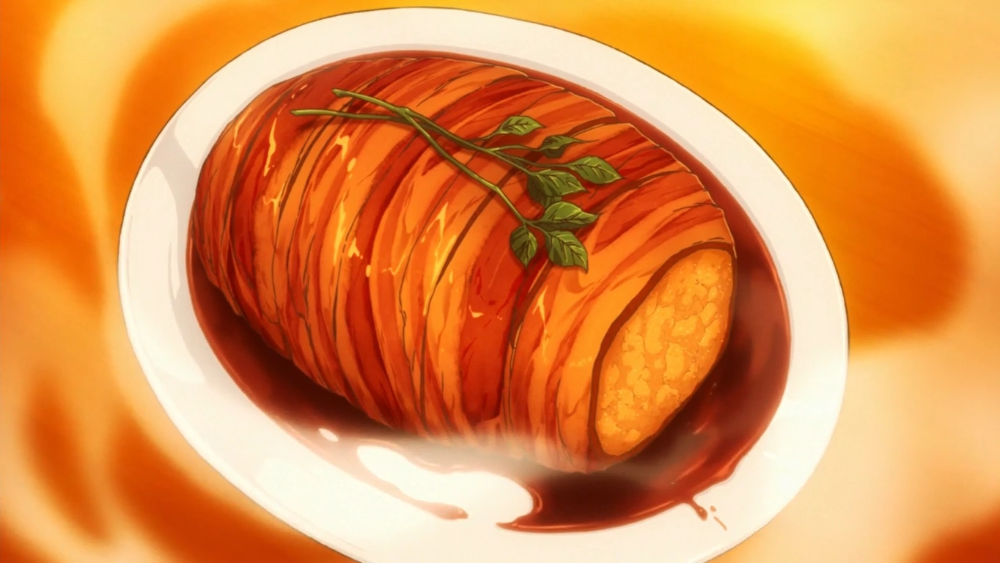

Gotcha! Roasted Pork

Now this is one of the dishes where Soma had been sabotaged and his whole ingredients were ruined but he still managed to pull off and blow everyones minds.
Yeah, it's that good! That's one of the few reasons why it is even on this website.
In this dish, creamy mashed potatoes are mixed with things like onions and mushrooms which add depth and umami, then it's shaped into a cylinder and wrapped in bacon.
Finally, the gotcha pork roast is oven baked so that the fat from the bacon penetrates the potato and adds a meaty flavour.
So let's get started on making this masterpiece!
Ingredients:
Total preparation Time – 100 minutes
Total Calories Per Serving – 426 kcal
The Ingredients for this delicious meal are:
- Gotcha! Pork Roast:
- 3 medium Russet potatoes peeled and cut in quarters
- Water for boiling
- 1 tsp salt
- 1 pinch pepper
- 1 garlic clove whole
- 2 sprigs fresh rosemary
- 50ml whole milk
- 2 tbsp (approx 20g) unsalted butter (1 for potatoes, 1 for frying)
- 1 tsp chicken bouillon powder (I use Yuki Garasupu)
- ½ tbsp Worcestershire sauce
- ½ onion finely diced
- 1 eryngii mushroom finely diced
- 3 cloves garlic finely diced
- 1 tsp parmesan cheese powdered or finely grated
- 1 pinch dry parsley
- 6-8 rashers of streaky bacon (long pieces are best)
- Red Wine Sauce:
- 150ml red wine
- 1 tbsp soy sauce
- 1 tbsp mirin
- 1 tsp sugar
- 1 tbsp (approx 10g) unsalted butter
The Preparation:
Now we are back to the fun part, the cooking!
- Gotcha! Pork Roast:
- Place the peeled/cut potatoes inside a large pot and fill with cold water until the potatoes are fully submerged.
- Add 1 tsp salt, a pinch of pepper, 1 sprig of rosemary and a whole garlic clove to the pot and place it on the stove.
- Bring the water to a rolling boil and cook until the potatoes are soft to the core. (This should take about 10-15 minutes depending on the size.)
- Pour the potatoes into a colander to drain the water, give them a shake and discard the rosemary and garlic clove. Let the potatoes sit for 1-2 minutes to let out the excess steam.
- Transfer the potatoes to a large mixing bowl and mash until smooth.
- Add 50ml of whole milk and 1 tbsp unsalted butter to a small microwavable bowl. Cover the bowl and microwave for 40 seconds at 500W or in intervals until the butter has melted.
- Add 1 tsp of chicken bouillon powder to the warm milk and butter and mix until dissolved.
- Pour the mixture into the potatoes and mix until smooth. Cover the bowl and set aside for later.
- Heat a frying pan on medium and add 1 tbsp unsalted butter and ½ tbsp Worcestershire sauce.
- Once the butter is melted, add ½ a diced onion and fry until slightly softened.
- Add 3 diced garlic cloves and 1 finely diced eryngii mushroom and fry everything together until the onions start to turn translucent.
- Remove the pan from the heat and allow to cool for a few minutes.
- Transfer the contents of the pan to the bowl of mashed potato along with 1 tsp of parmesan cheese and a sprinkle of dried parsley.
- Mix until all the ingredients are evenly distributed, cover the bowl so the mixture doesn't dry out and then leave to cool to room temperature.
- Take a sheet of plastic wrap and place the mixture in the middle. Shape into a thick cylinder and firmly wrap.
- Chill in the fridge for about 30 minutes.
- The Baking:
- Preheat your oven to 180 degrees Celsius. (Approx 355°F)
- Remove your mashed potato from the fridge and wrap each end with 1-2 rashers of bacon. Wrap the rest of the bacon (4 long rashers) around the cylinder of mashed potato and try to make sure there aren't any gaps.
- Wrap the bacon with butchers twine to keep it secure and place 1 sprig of rosemary on the top.
- Transfer the gotcha pork roast to a roasting tin and place it in the oven on the top shelf. Bake for 20 minutes or until the bacon is golden.
- Red Wine Sauce:
- Heat a small saucepan on medium and add 1 tbsp butter.
- Once the butter is melted, add 150ml red wine, 1 tbsp soy sauce, 1 tbsp mirin and 1 tsp sugar.
- Bring to a boil and allow it to bubble for a few minutes to burn off the alcohol in the wine and mirin.
- Remove from the heat.
- The Serving:
- Take the gotcha pork roast out from the oven and allow to rest for a few minutes.
- Cut off the butchers twine and transfer it to a serving plate. (Use a spatula to help you lift it.)
- Drizzle with the red wine sauce.
- Enjoy!
And there you have it people! The delicious, breathtaking Gotcha! Roast Pork !